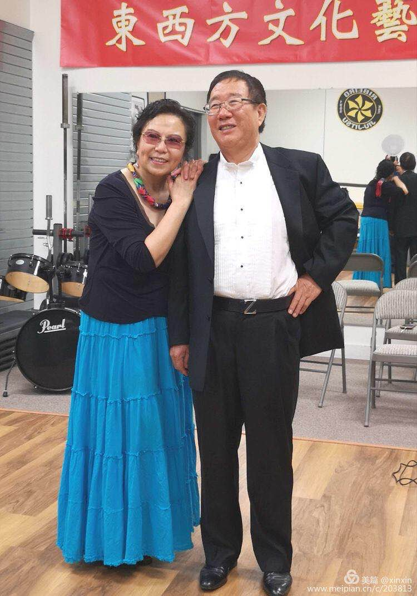

North America Chinese Writers Association Los Angeles
結婚近四十年，與妻子吵架不計其數。
說是吵架，其實並不是兩個人你一句我一句的爭對錯，決勝負。大多時候是我不小心惹妻子生氣了，她擺出領導的架式，居高臨下地對我進行批評、教育和指責。
我生性不拘小節，妻子卻凡事要求盡善盡美，而且有一雙如同顯微鏡般的慧眼，特別會找我身上的差錯。
按說妻子對我的要求也不高，並不嫌我沒進政治局，上富布斯榜，發明抗癌藥，也不怪我沒獲得諾貝爾文學獎。但對我身上的小毛病卻嫉惡如仇。如：出門穿著不修邊幅，公共場合說話音高，對她娘家的弟妹不夠熱情等，我認為不是事的事，她都會疾言厲色地當場指責糾正。如果我試圖解釋或者爭辯，那就是不思悔改，堅持錯誤，與代表正義的她為敵。旁邊有人時，她就會隱忍不發，回到家後，甚至是等到夜深人靜，才板起面孔朝我發洩不滿，有時還會翻出陳年舊事，新帳老帳一起算。那陣勢一點也不亞於小常寶控訴土匪罪行。
最初幾次，我忍不住回嘴頂撞了幾句。結果是火上澆油，反而會多折騰好幾天，最後，還是得讓她說了最後一句壓軸的話，才能平息事態。
幾次過後，我漸漸認同了朋友的說法：老婆都是不講理的，家裡也不是講理的地方，明知道妻子不講理，卻偏要跟她論理，只能說是自己的腦子有毛病。既使吵贏了，其實也是輸。
我服輸了。
事實上，能讓我改變心態甘心服輸，最重要的還是朋友的一句話戳中了我的要害：「如果你老婆心情不好時不找你發火，而去找別的男人傾訴，你會是怎麼樣的心情？」這一反問像打開了一瓶家鄉的老陳醋，立馬讓我感到酸溜溜的。從那一刻起，我就暗下決心，當一個能承載一切委屈的受氣包。
雖然我有了向老婆服軟的既定方針，但也擔心會走壞行情，把她慣「壞」。孔聖人就曾提醒說：唯女子與小人難養也。
可是，男不和女鬥，雞不和狗鬥；寧得罪小人，別得罪女人；忍一時風平浪靜；大丈夫能屈能伸等古訓，立即在我的腦海裡佔了上風。我的心態很快平衡了，認為男子漢能忍受委屈，與宰相肚子里能撐船是同義語。而且《孫子兵法》中早就告訴過我應對之法：「胸有激雷而面如平湖者，可拜上將軍」。只是我讀書滿足於一知半解，沒有細品，現在才悟出古今許多成功者，大概都是先從心中早已火冒三丈，臉上卻能不露聲色做起，磨練自己當「上將軍」的潛質，才有了在戰場和官場上的所向披靡。
於是，我改變了策略，並總結了幾個化解的辦法。那就是在妻子發脾氣時，做到「五不」：不申辯、不理睬、不較真，不生氣，不往心裡去。讓她一個巴掌怎麼也拍不響。
“吵架”後的第二天，我們就變成了這個樣子
可是，這「上將軍」也不是好當的，要想練就這聽責罵聲充耳不聞的本領也並非易事。那喋喋不休的數落聲，就像家中搞裝修，發出刺耳的電鑽聲一樣，讓我不勝其煩。
記得有一次，妻子又開始對我進行了常規教育。我「面如平湖」，表現出洗耳恭聽的樣子，心裡卻暗自哼唱起了流行歌曲，想讓優美的旋律來抵制外來的噪音。默唱了一段後，發現效果不明顯，唱歌並不能完全排除干擾，轉移注意力，我又試著集中精力作打油詩，描寫當時的情景：
臥室忽開批鬥會，
怒吼聲聲樓欲摧。
家長俯首不出聲，
太座咆哮口水飛。
新錯舊帳齊清算，
義憤填膺發虎威。
字字珠璣沒入耳，
心中默唱「北風吹」。
這個辦法還真見效，我浸沈在創作的激情中，還想潤色一下個別字句時，突然發現耳根清淨了，原來，她已口乾舌燥放棄對我的再教育。
此後，每逢妻子發脾氣指責我時，我立馬就會產生創作的慾望。而且思維也逐漸跳出了家庭的圈子：擔憂非洲難民吃不飽飯，烏克蘭美女找不到男人，伊拉克人在戰亂中生活……
我知足了。
一般情況下，妻子嘮叨上一陣，見我不回嘴，如同對牛彈琴，聽不到回應的掌聲一樣，會感到索然無味，就沒了激情，會自動告停。第二天，家中就會成為解放區的天。出完了氣的她，就會恢復小鳥依人般的溫柔。
如今，每次遇到妻子耍威風，我都會運用寫作之法應對，而且屢試不爽。以至我的醉酒壯膽、假痴不顛、走為上等計，竟沒能派上用場。